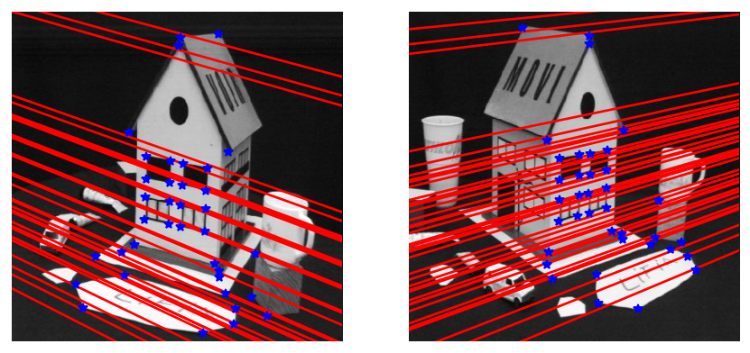
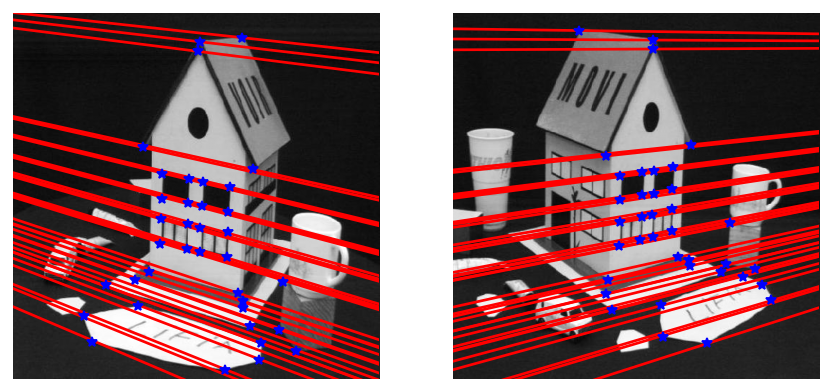
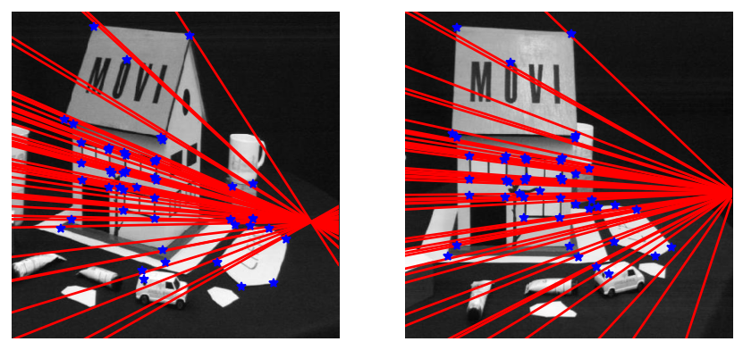
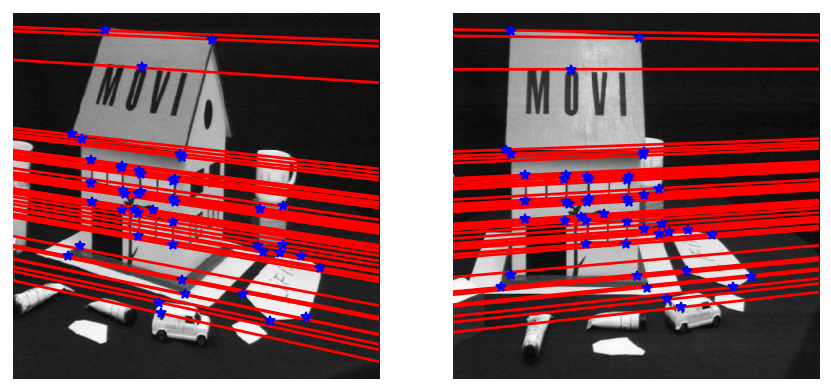

& Structure from Motion
SYDE 671 · Assignment 4 · James Xie
PART 1 · FUNDAMENTAL MATRIX
ESTIMATION
Estimate the fundamental matrix from corresponding points and measure their distances to epipolar lines.
(a) Linear eight-point algorithm
Each correspondence adds a row to Af = 0 under the ideal epipolar constraint x2TF x1 = 0. The last right singular vector of A gives the initial 3 × 3 estimate of F. A second SVD sets the smallest singular value to zero to enforce rank two.
(b) Linear results
Set 1 has 37 correspondences and Set 2 has 46. Each reported matrix has unit Frobenius norm, with its largest-magnitude entry positive. Entries are shown to eight decimal places.
0.00000155 -0.00000818 -0.00150440 -0.00000587 -0.00000030 -0.01136076 -0.00352312 0.01414539 0.99982807
0.00000563 -0.00002750 0.00642650 0.00002776 0.00000675 -0.01521820 -0.01076236 0.01225192 0.99973055
(c) Normalized eight-point algorithm
Center each point set at its own centroid and scale it to a mean distance of √2 from the origin. Apply the rank-two solver in normalized coordinates, then return to pixels:
(d) Normalized results
0.00000446 -0.00003639 0.00060312 -0.00003351 -0.00000232 -0.04391488 -0.00584763 0.06030859 0.99719597
0.00001334 -0.00022205 0.01378022 -0.00032032 -0.00002837 -0.61962178 -0.02086722 0.75224169 0.22265623
(e) Point-to-epipolar-line distance
Each point in the second image defines a line in the first image through ℓ₁ = Fᵀx₂. For the second image, swap the point sets and transpose F.
(f) Distance results and overlays
For line (a, b, c) and pixel (u, v), compute |au + bv + c| / √(a² + b²) and average over the correspondences used to fit each matrix.
| Image | Linear (px) | Normalized (px) |
|---|---|---|
| Set 1, image 1 | 28.0257 | 0.8906 |
| Set 1, image 2 | 25.1629 | 0.8287 |
| Set 2, image 1 | 9.7014 | 0.8895 |
| Set 2, image 2 | 14.5682 | 0.8917 |
Normalization reduced the mean distance in all four images to below 0.90 pixels. The overlays show epipolar lines in red and matching points in blue.







